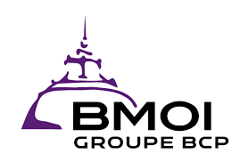

eAriary est distribué par les institutions que vous connaissez déjà. Des transferts jusqu'à 3x moins chers que les solutions classiques, avec une sécurité de niveau bancaire.
Ouvrir un compte
Rejoignez-nous en quelques minutes
Que vous ayez déjà un compte dans une institution partenaire ou non, vous pouvez toujours ouvrir un compte eAriary en quelques minutes.
L'eAriary s'adapte à vos besoins, personnels ou professionnels
Déposez de l'argent ou convertissez votre solde en eAriary
Retirez votre argent quand vous en avez besoin
Envoyez de l'argent à un proche en quelques secondes
Payez chez vos marchands avec eAriary
Payez vos trajets simplement et rapidement
Payez vos cotisations et recevez vos remboursements
Recevez des aides monétaires ou en nature directement
Recevez vos bourses, subventions et transferts publics
Recevez les paiements de vos clients en eAriary
Transactions commerciales entre entreprises
Acceptez les paiements eAriary dans votre commerce
Gérez les salaires et paiements en volume
Distribuez les aides et collectez les taxes
Distribuez les aides rapidement et de manière traçable
Gérez la distribution d'aide matérielle et alimentaire
Tracez les paiements dans vos filières (ex. vanille)
Tout ce que vous devez savoir sur l'eAriary
| Critères | eAriary | Mobile Money |
|---|---|---|
| Émetteur | Banque Centrale (BFM) | Opérateur privé |
| Stabilité | Créance sur BFM | Créance sur l'opérateur |
| Statut légal | Monnaie ayant cours légal | Moyen de paiement réglementé |
| Accessibilité | Avec ou sans compte bancaire/mobile money | Compte chez l'opérateur requis |
| Frais | Faibles ou inexistants selon les cas d'usages | Variables, parfois élevés |
Le développement de la solution a démarré en Q4 2025. L'eAriary sera accessible au grand public à partir d'août 2026.